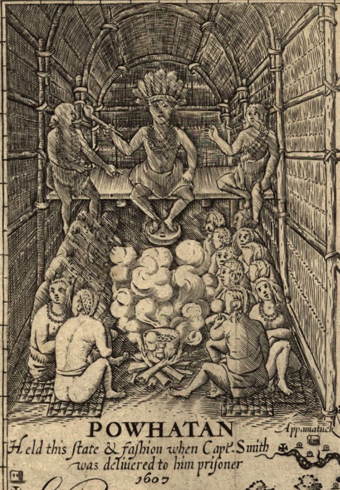

Directions: Your group has the tobacco ledger. Each station holds one record from Virginia's first seventy years. For every record, state what problem it was answering and what it cost. Work through the five stations in order, then deliver the closing verdict in Part 2.
Source: John Smith, A True Relation, 1608 (Pocahontas Archive, Lehigh University; from Philip L. Barbour, The Complete Works of Captain John Smith). Audited TPSP bank record, smith-true-relation-1608. Cuts are marked with ellipses. Smith's spelling is as the edition carries it.
... their Emperour proudly lying uppon a Bedstead a foote high, upon tenne or twelves Mattes, richly hung with Manie Chaynes of great Pearles about his necke, and covered with a great Covering of Rahaughcums. ... hee kindly welcomed me with such good wordes, and great Platters of sundrie Victuals, assuring mee his friendship, and my libertie within foure days. ... hee promised to give me Corne, Venison, or what I wanted to feede us, Hatchets and Copper wee should make him, and none should disturbe us. ...

Problem it was answering: ____________________________ What it cost: ____________________________
State the bargain in this record. What did Wahunsenacawh promise the starving colony, and what did he ask the English to make for him in return?
Smith was Wahunsenacawh's prisoner when this meeting began. State what the welcome, the feast, and the promised liberty show about how the chief was handling the English, and name one thing this 1608 account does not contain that Smith's later writing adds.
Source: John Smith, Letter to Queen Anne, 1616 (Hanover College; spelling modernized). Audited TPSP bank record, smith-letter-queen-anne-1616. Cuts are marked with ellipses. The figures in the table are a teaching summary compiled from the colony's own accounts of the winter of 1609 and 1610.
... I was safely conducted to Jamestown, where I found about eight and thirty miserable poor and sick creatures, to keep possession of all those large territories of Virginia, such was the weakness of this poor Commonwealth, as had the Savages not fed us, we directly had starved. ... And this relief, most gracious Queen, was commonly brought us by this Lady Pocahontas ... during the time of two or three years, she next under God, was still the instrument to preserve this Colony from death, famine and utter confusion ...
| Winter of 1609 and 1610 | Number |
|---|---|
| Colonists at Jamestown, autumn 1609 | about 500 |
| Alive in the spring of 1610 | about 60 |
Problem it was answering: ____________________________ What it cost: ____________________________
Smith wrote this letter in 1616 to present Pocahontas to Queen Anne. State the work the letter needs Pocahontas to do in it, and quote the phrase in which Smith gives her the credit for the colony's survival.
State what the table adds that the letter does not say, and state why a reader should hold the two parts of this station to different standards of trust.
Source: Teaching summary of two public records of the Virginia Company. The headright grant was set out in the company's instructions of 1618. The assembly record is the colony's report of the first meeting of the House of Burgesses at Jamestown, July 30 to August 4, 1619. This station is a summary, written for this lesson, not a quotation.
The company had two problems left after the starving time. Virginia had land in plenty and almost no one to work it, and the colonists who did come had no voice in the laws they lived under. The headright answered the first problem. Any person who paid for an immigrant's passage to Virginia received fifty acres of land, so a planter who imported twenty servants gained a thousand acres with them. The assembly answered the second. In the summer of 1619 Governor Yeardley called an assembly at Jamestown. Two burgesses from each settlement sat with the governor and his council, debated the company's instructions, set penalties and prices, and petitioned London. It was the first elected assembly in English America, and its voters were landowning colonists.
Problem it was answering: ____________________________ What it cost: ____________________________
State how the headright turned people into land. How many acres did one paid passage earn, and what did a planter gain by importing twenty servants?
State who could sit in the House of Burgesses and who chose them, and state one thing the assembly could not represent in 1619.
Source: Teaching summary compiled from the colony's records for this lesson, with the tobacco plant plate below. John Rolfe's planting of a West Indian strain from about 1612, the growth of exports to England, and the terms of indenture are as the reading states them. The figures for exports are rounded from the customs record and are labeled as the record's figures wherever they are used.
Tobacco made the colony pay, and tobacco set its terms. The plant took the goodness out of a field in a few years, so every planter needed more land than he farmed. It needed hands at every stage, setting plants, topping and weeding through the summer, cutting, hanging, and packing the cured leaf. England's market took all Virginia could ship. The hands came first as indentured servants, bound for four to seven years, and the colony's records of the early decades show servants dying in their first summer at rates no recruiting pamphlet in London ever printed.
Problem it was answering: ____________________________ What it cost: ____________________________
State the two hungers tobacco created, one for land and one for labor, and give the reason the record gives for each.
State the bargain an indentured servant made, in full: what the servant gave, what the servant was promised, and what the record at this station says about the servant's chances in the first summer.
Source: Nathaniel Bacon, Declaration in the Name of the People, 1676 (American History from Revolution to Reconstruction, as the bank record names its edition). Audited TPSP bank record, bacon-declaration-1676. Cuts are marked with ellipses in brackets. Bacon's spelling is as the edition carries it.
1. For haveing upon specious pretences of publiqe works raised greate unjust taxes upon the Comonality for the advancement of private favorites and other sinister ends, but noe visible effects in any measure adequate [...]
4. For haveing, protected, favoured, and Imboldned the Indians against his Majesties loyall subjects, never contriveing, requireing, or appointing any due or proper meanes of sattisfaction for theire many Invasions, robbories, and murthers comitted upon us. [...]
Of this and the aforesaid Articles we accuse Sir William Berkeley as guilty of each and every one of the same, and as one who hath traiterously attempted, violated and Injured his Majesties interest here [...]
Nathaniel Bacon Generall by Consent of the people.
Problem it was answering: ____________________________ What it cost: ____________________________
List Bacon's charges against Governor Berkeley under two heads, money and safety. Quote the words that carry one charge under each head.
Bacon signs himself Generall by Consent of the people while accusing the king's governor of treason. State what he is claiming for his rebellion by that signature, and state whose consent the declaration does not record.
Your group has entered five records in the ledger: a chief's bargain, a starving colony, a company's two answers, a crop and its hands, and a rebel's declaration. Now judge the ledger as a whole.
Changed Virginia most (station number and record): ____________________________
Changed Virginia least (station number and record): ____________________________
In a short paragraph, deliver your verdict. Name the single change between 1607 and 1680 your group judges mattered most to what Virginia became, and defend the judgment from the documents: quote or name the evidence in that station's record, and state what followed from it. Then name the change that mattered least and say why its reach was smaller.
Problem and cost. The problem was survival on both sides of the meeting: the English needed food, and Wahunsenacawh needed to place a strange armed party inside his country on terms he controlled. The cost fell first on the English, who lived by his leave, and later on his people, whose corn and land the colony's survival consumed.
State the bargain. Wahunsenacawh promised corn, venison, or whatever the colony wanted to feed it, and liberty for Smith within four days. In return the English were to make him hatchets and copper. The trade goods he asked for were tools and metal, the products of English craft his people valued, and the promise that none should disturb the English ran from him, not to him.
State what the welcome shows, and what is missing. The welcome, the feast, the formal seating, and the promised liberty show a chief managing the English through diplomacy: feeding them, learning their purposes, and binding them with gifts while he decided their place in his country. The 1608 account contains no rescue. No stones, no clubs, and no Pocahontas appear in it. The rescue enters Smith's writing in 1616 and in full in 1624, and students should name that absence without prompting by the end of the station.
Problem and cost. The problem was the colony's weakness, a few dozen sick survivors holding a claim to a continent. The cost was the colony's dependence: by Smith's own sentence, without Powhatan food the English would directly have starved.
State the letter's work and quote the phrase. The letter introduces Pocahontas, now Rebecca Rolfe, to Queen Anne, and it needs her as the proof that the colony survived by Native help and that Native people could be brought into the English world. Smith's phrase is that she was, next under God, the instrument to preserve this Colony from death, famine and utter confusion. Relief, he writes, was commonly brought by Pocahontas herself.
State what the table adds, and the two standards. The table gives the scale of the winter of 1609 and 1610, about five hundred colonists reduced to about sixty, which the letter, describing an earlier winter, does not state. The letter is a piece of persuasion written to a queen for a company's purposes and should be read for its aims as well as its facts. The table is a compiled summary from the colony's accounts and should be checked against them. A persuasive letter and a compiled count are different kinds of evidence, and the station teaches students to say so.
Problem and cost. The problems were labor and consent: land without workers, and colonists governed without a voice. The costs were structural. The headright tied land to the importation of people and rewarded the men who could import the most, and the assembly represented landowners only.
State how the headright turned people into land. One paid passage earned fifty acres. A planter who imported twenty servants gained twenty passages worth of land, a thousand acres, along with the servants' labor for their terms. Land, the colony's wealth, was paid out per head, and the system made importing bound labor the fastest road to a great estate.
State who sat, who chose them, and one limit. Two burgesses from each settlement sat with the governor and his council. Landowning colonists chose them. The assembly could not represent the colony's servants, its women, the Powhatan peoples whose land the colony was taking, or the Africans who arrived weeks later. Any one of these earns the point; the strongest answers name the Africans, because the same summer joined the first assembly and the first recorded arrival.
Problem and cost. The problem was profit: the company needed a commodity England would buy. The cost was the colony's shape, a settlement strung along rivers in reach of fresh land, worked by bound laborers who died young.
State the two hungers. For land, because tobacco exhausted a field's soil within a few years, so every planter needed more land than he farmed and settlement spread onto Powhatan land. For labor, because the crop needed hands at every stage from setting plants to packing the cured leaf, in every season.
State the servant's bargain. The servant gave four to seven years of labor. In exchange the servant was promised passage to America and freedom dues at the term's end, with land the hope beyond them. The station's record states that servants died in their first Virginia summer at rates the recruiting pamphlets in London never printed. The seasoning fevers are the cost the bargain's London paperwork left out.
Problem and cost. The problem was misgovernment as the frontier felt it: taxes without results and a governor who would not loose retaliation on the peoples raiding the settlements. The cost was civil war inside the colony, Jamestown burned by its own settlers, and a settlement afterward that hardened Virginia's labor system.
List the charges under money and safety. Money: Berkeley raised great unjust taxes upon the Comonality for the advancement of private favorites, with no visible effects adequate to them. Safety: he protected, favoured, and imboldned the Indians against the king's loyal subjects and appointed no due means of satisfaction for their invasions, robberies, and murders committed upon us.
State the signature's claim, and the missing consent. By signing himself Generall by Consent of the people while accusing the governor of treason against the king, Bacon claims that his armed rebellion is the lawful act and Berkeley's government the crime, and that the people's consent, not the governor's commission, is the authority in Virginia. The declaration does not record the consent of the colony's enslaved and servant population as voters, of its women, or of the Indigenous peoples his men were attacking, including peoples who had not raided the frontier.
Full credit answers will differ in their ranking. The strongest verdicts usually place Station 4 or Station 1 at the top: the crop, because tobacco's two hungers for land and labor set the terms of Chesapeake life for a century, or the chief's bargain, because every later event in the ledger ran on the survival Wahunsenacawh's corn made possible. Station 3's assembly is the usual least choice on reach within the period, since its voters were few and its powers small in 1619, though a student may argue Station 2 changed least because the letter's persuasion changed no policy by itself, and credit that reasoning when the documents carry it.
Full credit for the paragraph should be awarded if the student: